05 Introduction to PISA
1 Introduction to PISA
1.1 Pre-session tasks
1.1.1 Pre-reading
Please read through 2018 technical report: PISA technical report
1.1.2 Getting set up
Remember to load the PISA 2018 data set
1.2 The PISA assessments
The first International Large-Scale Assessment (ILSA) comparing the learning outcomes of school students between countries was attempted in the 1960s. However, ILSAs only became established and regular in the late 1990s and 2000s.
The OECD’s Programme for International Student Assessment (PISA) has tested 15-year-old students in a range of “literacies” or “competencies” every three years since 2000. There is a rotating focus on reading, mathematics and science, with PISA 2021 focusing on mathematics but delayed by the global pandemic until 2022 and the results only published in December 2023. Until then, PISA 2018, with a focus on reading, was the most recently available cycle and PISA 2015 remains the most recent cycle focusing on science.
In addition to reading, mathematics and science, PISA has tested students on a range of “novel” competencies including problem-solving, global competence, financial literacy, and creative thinking. In addition to these tests, PISA also administers questionnaires to students, teachers and parents to identify “factors” which explain test score differences within and between countries.
Since 2000, more than 90 “countries and economies” and around 3,000,000 students have participated in PISA. The growth in the number of countries participating in each cycle of PISA is reflected in the growth in the number of students taking the PISA tests and responding to the PISA questionnaires, as shown in Table 1.
Table 1: Number of students participating in PISA by year
| Year | Number completing assessment |
|---|---|
| 2000 | 265,000 |
| 2003 | 275,000 |
| 2006 | 400,000 |
| 2009 | 470,000 |
| 2012 | 510,000 |
| 2015 | 540,000 |
| 2018 | 600,000 |
| 2022 | 690,000 |
There is a degree of inherent error in all educational and psychological assessments - and indeed in all social or physical measurement. ILSAs such as PISA may be more prone to error because their comparisons across large and diverse populations make them particularly complex. However, it is particularly important to minimise the error in ILSAs because they influence education policy and practice across a large number of education systems, impacting a vast population of students beyond those sampled for the assessments.
According to the OECD (2019), three sources of error are worth considering. First, sampling error, uncertainty in the degree to which results from the sample generalise to the wider population - in 2018, the OECD average sampling error was 0.4 of a PISA point score. Second, measurement error, uncertainty in the extent to which test items measure proficiency. In 2018, the measurement error was around 0.8 of a point in mathematics and science and 0.5 of a score point in reading. Third, the link error is the uncertainty in comparison between scores in different years. For comparisons of science scores between 2018 and 2015, the link error is 1.5 points.
PISA uses a probabilistic, stratified clustered survey design (Jerrim et al. 2017). However, sampling issues including sample representativeness, non-response rates and population coverage have been identified (Zieger et al. 2022; Rutkowski and Rutkowski 2016; Gillis, Polesel, and Wu 2016; Hopmann, Brinek, and Retzl 2007). Furthermore, Anders et al. (2021) and Jerrim (2021) have shown that assumptions for imputing values (imputing means estimating any missing values based on existing data - for example by adding a mean or mode score for a missing test) for non-participating students used to construct the sample may have significant impacts on achievement scores.
Since PISA 2015, the majority of participating countries have switched from paper-based assessment to computer-based assessment (Jerrim 2016). A randomised controlled trial conducted by the OECD prior to the switch indicated a difference in score between the two modes of delivery. The OECD introduced an adjustment to compensate for this difference, but it is not entirely removed by the adjustment Jerrim et al. (2018), with implications for any time series comparisons between PISA cycles. Nonetheless, Jerrim (jerrim2016?) notes that “in terms of cross-country rankings, there remains a high degree of consistency… the vast majority of countries are simply ‘shifted’ by a uniform amount” (pp. 508-509).
In summary, comparisons within and between countries and comparisons over time using ILSAs need careful interpretations that bear in mind the specific design of each ILSA. In practice, this means considering a range of potential explanations for score differences. Does a difference in science ranking between two countries simply reflect sampling error? Does the same parental occupation or home possessions amount to the same economic, social and cultural status in different countries (e.g. the social status of a parent as a teacher or the economic status of the number of cars a family owns)? Does a difference in mathematical self-efficacy (i.e. student self-confidence in mathematics) between the USA and Japan reflect sociocultural differences in self-enhancement and modesty, respectively? How do score differences between boys and girls indicate gender inequalities in education that reflect wider society?
1.3 A reminder about summarising data, graphing and categorising
1.3.1 Summarising data
Recall you can use group_by and summarise to group individual student measures and find means and standard deviations for countries. For example, to find the mean wealth scores for the countries, and rank in descending order, we first select the variables of interest CNT and WEALTH, then group_by CNT and summarise to get the mean. As there are some NA values, we need to include na.rm=TRUE to tell summarise to ignore the missing values. Finally, we arrange in descending order by the new variable we create meanwealth. We can do the same and add a calculation to get the standard deviation.
PISA2018WealthRank <- PISA_2018 %>%
select(CNT, WEALTH) %>% # Select variables of interest
group_by(CNT) %>% # group by country
summarise(meanwealth = mean(WEALTH, na.rm = TRUE)) %>%
# summarise country data to find the mean WEALTH
arrange(desc(meanwealth)) # arrange in descending order based on the meanwealth score
PISA2018WealthRank# A tibble: 80 × 2
CNT meanwealth
<fct> <dbl>
1 Denmark 0.871
2 Australia 0.667
3 Norway 0.666
4 United Arab Emirates 0.508
5 Malta 0.454
6 United Kingdom 0.444
7 Sweden 0.440
8 New Zealand 0.435
9 Iceland 0.428
10 Netherlands 0.426
# ℹ 70 more rows# With standard deviations
PISA2018WealthRank <- PISA_2018 %>%
select(CNT, WEALTH) %>% # Select variables of interest
group_by(CNT) %>% # group by country
summarise(meanwealth = mean(WEALTH, na.rm = TRUE),
# summarise country data to find the mean WEALTH
sdwealth=sd(WEALTH, na.rm = TRUE)) %>% # and standard deviation
arrange(desc(meanwealth))
# arrange in descending order based on the meanwealth score
PISA2018WealthRank# A tibble: 80 × 3
CNT meanwealth sdwealth
<fct> <dbl> <dbl>
1 Denmark 0.871 0.708
2 Australia 0.667 0.864
3 Norway 0.666 0.938
4 United Arab Emirates 0.508 1.46
5 Malta 0.454 0.868
6 United Kingdom 0.444 0.891
7 Sweden 0.440 0.900
8 New Zealand 0.435 0.901
9 Iceland 0.428 0.813
10 Netherlands 0.426 0.752
# ℹ 70 more rows1.3.2 Bar charts
Recall you can use geom_bar to plot a bar graph. For example, if we wanted to plot the PISA2018WealthRank dataframe we just created, we pass the data to ggplot. Recall that if you are passing geom_bar the exact values you want to plot, rather than making it count (for example, by including the original dataset with all student entries), you need to specify geom_bar(stat='identity')
I have added +theme(axis.text.x = element_text(angle = 90, vjust = 0.5, hjust=1)) which rotates the text on the x-axis.
ggplot(PISA2018WealthRank, aes(x = CNT, y = meanwealth))+
geom_bar(stat = 'identity')+
theme(axis.text.x = element_text(angle = 90, vjust = 0.5, hjust = 1))
We can improve this plot by reordering the x-axis to rank the countries - we switch x=CNT to x=reorder(CNT, -meanwealth) that is we reorder the x axis based on descending (indicated by the minus sign -meanwealth) meanwealth.
ggplot(PISA2018WealthRank, aes(x=reorder(CNT, -meanwealth), y = meanwealth)) +
geom_bar(stat='identity') +
theme(axis.text.x = element_text(angle = 90, vjust = 0.5, hjust = 1))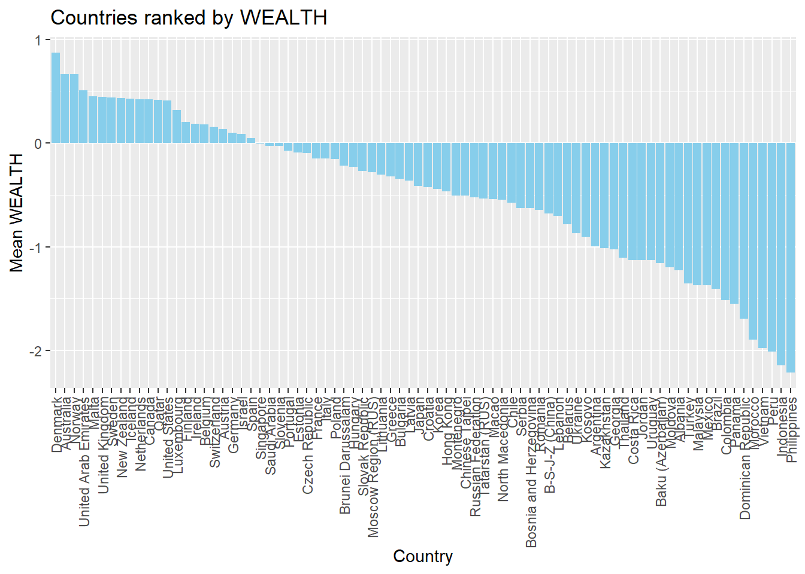
If you like, you can add colour, tidy up the axis labels, and give a title:

1.3.3 Scatter plots
To plot a scatter plot, recall we use geom_point. For example, to plot reading scores against mathematics scores in China (note China’s CNT value: B-S-J-Z (China) which indicates the data ) we: a) create a data set of reading and science scores after filtering for China; b) pass the data to ggplot; c) use ’aes to specify the x and y variables and d) plot with geom_point().
Chinaplot <- PISA_2018 %>%
select(CNT, PV1READ, PV1SCIE) %>%
filter(CNT == "B-S-J-Z (China)")
ggplot(Chinaplot, aes(x = PV1READ, y = PV1SCIE)) +
geom_point()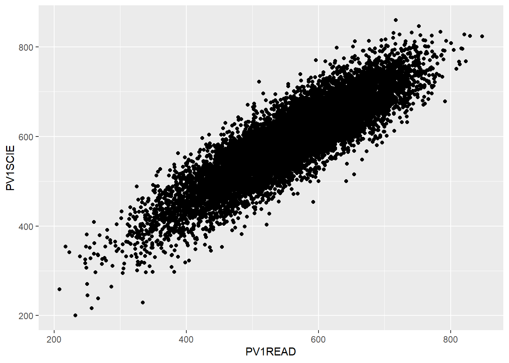
That graph is quite dense, so we can use the alpha function to make the points slightly transparent, size to make them smaller, and set their colour. I will also tidy up the axis names and add a line.
1.3.4 Density plots
An alternative type of plot is the density plot, which is a kind of continuous histogram. The density plot can be useful for visualising the achievement scores of students. For example, the mathematics scores of girls and boys (recall the gender variable is ST004D01T) in the US. Notice, for the plot, I use aes to set my x variable, and then specify that the plot should fill by gender (fill=ST004D01T). Finally, in geom_density(alpha=0.6) I set the alpha to 0.6 to make the fill areas partially transparent.
The y-axis on a density plot is chosen so that the total area under the graph adds up to 1
1.3.5 Facet wrapping - producing the same graph for multiple countries.
A powerful feature of ggplot is being able to produce the same graph for multiple values of a variable, for example, for multiple countries. For example, we may want to produce the density graph of PV1MATH score by gender, for several countries in the data set. To do that, we produce a data set of PV1MATH scores, and gender (ST004D01T) and filter for four countries (Philippines, UK, Bulgaria and Germany). We use the same code as above to plot the graphs but add +facet_wrap(.~CNT) - facet_wrap tells ggplot to produce a multipanel plot and .~CNT means do the same as above, but vary across countries.
1.3.6 Categorising responses
A useful analytical choice is to categorise some a numerical variable into ordinal classes. For example, rather than treating WEALTH as a continuous scale, you might want to split into high and low wealth groups (for example, those above and below the mean value). To do this, first calculate the mean mean(WEALTH). Then we add a new vector, which we will call wealthclass using the mutate function. We set the value of this wealthclass using ifelse. If WEALTH is more than the mean score, we set wealthclass to HIGH, and if it is anything else, we set it to LOW. We do that using wealthclass = ifelse(WEALTH > MeanUKwealth, "High", "Low"). Note in ifelse the first value is returned if the identity is true (i.e. if WEALTH > MeanUKwealth wealthclass is set to High). If the value if not true, the second value is set (e.g. if WEALTH is not > MeanUKwealth then wealthclass is set to LOW)
For example, create a data frame of UK participants WEALTH sorted into HIGH and LOW categories.
1.4 Seminar activities
1.4.1 Task 1 Discussion activity
• Discuss the design features of PISA (for example, sampling, forms of tests etc.) and the sources of error that arise from them.
• As researchers, what issues should we bear in mind when interpreting the data? (Consider, for example, measures of wealth, gender and “competency”)
• What caveats should policy makers bear in mind when making high stakes decisions based on the PISA measures (for example, what to include to curricula, where to target funding)?
1.4.2 Task 2 Create a ranked list
Create a ranked list of countries by their mean science scores (PV1SCIE). What are the top five countries for science? Do the same for wealth (WEALTH). What patterns do you notice? Why might a researcher be critical of such rankings [Extension: Include the standard deviation of each country (hint: use the sd function) - can you detect any patterns?]
Note that the PISA variable WEALTH refers to parental occupation - you might want to consider the implications of that definition for interpreting the data
Show the answer
# Create a ranked data data frame for science
PISA2018SciRank<-PISA_2018%>%
select(CNT, PV1SCIE)%>% # Select variables of interest
group_by(CNT)%>% # group by country
summarise(meansci = mean(PV1SCIE))%>%
# summarise country data to find the mean Sci score
arrange(desc(meansci)) # arrange in descending order based on the meansci score
print(PISA2018SciRank)# A tibble: 80 × 2
CNT meansci
<fct> <dbl>
1 B-S-J-Z (China) 594.
2 Singapore 549.
3 Macao 542.
4 Estonia 530.
5 Japan 529.
6 Korea 520.
7 Finland 519.
8 Hong Kong 519.
9 Czech Republic 514.
10 Poland 512.
# ℹ 70 more rowsShow the answer
# And repeat the ranking for wealth
PISA2018WealthRank<-PISA_2018%>%
select(CNT, WEALTH)%>% # Select variables of interest
group_by(CNT)%>% # group by country
summarise(meanwel = mean(WEALTH, na.rm=TRUE))%>%
# summarise country data to find the mean Sci score
arrange(desc(meanwel)) # arrange in descending order based on the meansci score
print(PISA2018WealthRank)# A tibble: 80 × 2
CNT meanwel
<fct> <dbl>
1 Denmark 0.871
2 Australia 0.667
3 Norway 0.666
4 United Arab Emirates 0.508
5 Malta 0.454
6 United Kingdom 0.444
7 Sweden 0.440
8 New Zealand 0.435
9 Iceland 0.428
10 Netherlands 0.426
# ℹ 70 more rowsShow the answer
# With standard deviations
PISA2018SciRank<-PISA_2018%>%
select(CNT, PV1SCIE)%>% # Select variables of interest
group_by(CNT)%>% # group by country
summarise(meansci = mean(PV1SCIE),
sdsci = sd(PV1SCIE))%>%
# summarise country data to find the mean Sci score
arrange(desc(meansci)) # arrange in descending order based on the meansci score
print(PISA2018SciRank)# A tibble: 80 × 3
CNT meansci sdsci
<fct> <dbl> <dbl>
1 B-S-J-Z (China) 594. 85.8
2 Singapore 549. 99.0
3 Macao 542. 83.2
4 Estonia 530. 88.4
5 Japan 529. 92.2
6 Korea 520. 98.6
7 Finland 519. 96.0
8 Hong Kong 519. 85.2
9 Czech Republic 514. 98.5
10 Poland 512. 91.4
# ℹ 70 more rowsShow the answer
PISA2018WealthRank<-PISA_2018%>%
select(CNT, WEALTH)%>% # Select variables of interest
group_by(CNT)%>% # group by country
summarise(meanwel = mean(WEALTH, na.rm=TRUE),
sdwel = sd(WEALTH, na.rm=TRUE))%>%
# summarise country data to find mean wealth score
arrange(desc(meanwel))
# arrange in descending order based on the meanwel score
print(PISA2018WealthRank)# A tibble: 80 × 3
CNT meanwel sdwel
<fct> <dbl> <dbl>
1 Denmark 0.871 0.708
2 Australia 0.667 0.864
3 Norway 0.666 0.938
4 United Arab Emirates 0.508 1.46
5 Malta 0.454 0.868
6 United Kingdom 0.444 0.891
7 Sweden 0.440 0.900
8 New Zealand 0.435 0.901
9 Iceland 0.428 0.813
10 Netherlands 0.426 0.752
# ℹ 70 more rows1.4.3 Task 2 Plot distributions of wealth scores scores
Use a scatter plot to show the correlation between WEALTH and ESCS. Use a facet_wrap to show the charts for the UK, Japan, Colombia and Sweden. Discuss the different relationships between the two variables across the countries.
Note that the PISA variable, Economic, Social and Cultural Status ESCS is based on parental education (PARED), highest parental occupation (HISEI), and home possessions (HOMEPOS), including books in the home. Do consider the implications of this definition.
Show the answer
# Create a data frame with the ESCS, gender (ST004D01T) and WEALTH variables for the 4 countries
WealthcompPISA<-PISA_2018 %>%
select(CNT, ESCS, WEALTH, ST004D01T)%>%
filter(CNT == "Japan" | CNT == "United Kingdom" | CNT == "Colombia" | CNT == "Sweden")
# Use ggplot to create a scatter graph
# Set the x varibale to ESCS and the y to WEALTH, set the colour to gender
# Set point size and transparency
# Facet wrap to produce graphs for each country
ggplot(WealthcompPISA, aes(x = ESCS, y = WEALTH, colour=ST004D01T))+
geom_point(size=0.1, alpha=0.5)+
facet_wrap(.~CNT)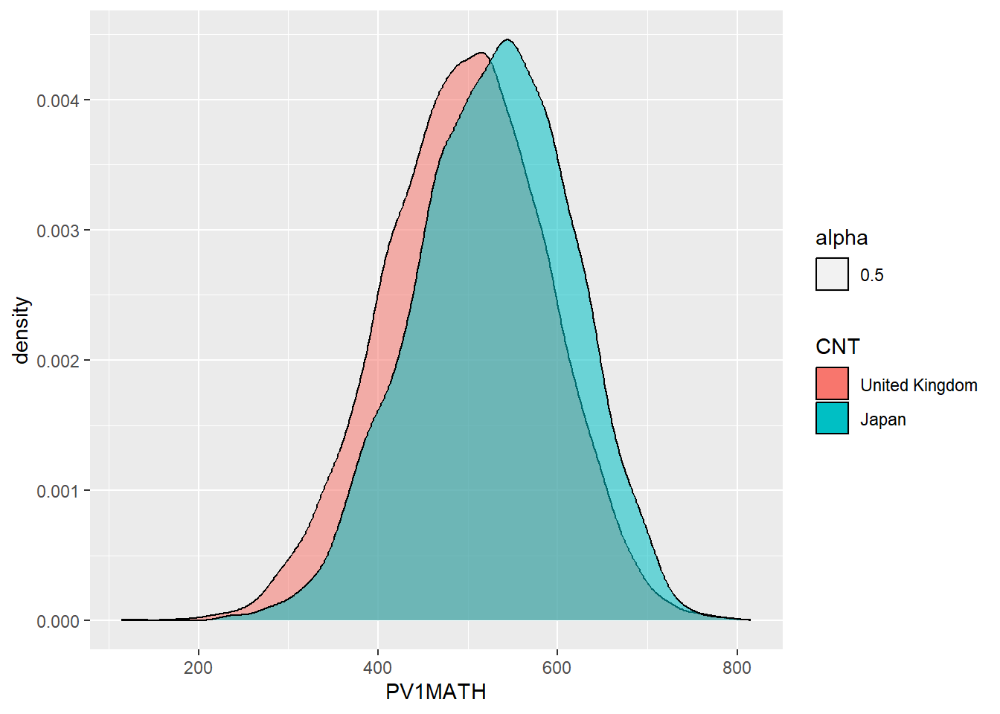
1.4.4 Task 3 Plot distributions of scores
- Use geom_density to plot distributions to plot the distribution of Japanese and UK mathematics scores - what patterns do you notice?
To plot a distribution, you can use geom_density to plot a distribution curve. In ggplot you specify the data, and then in aes set the x-value (the variable of interest, and set the fill to change by different groups). Within the geom_density call you can specify the alpha, the opacity of the plot.
For example, to plot science scores in the UK by gender, you would use the code below:
# Create a data frame of UK science scores including gender
UKSci<-PISA_2018 %>%
select(CNT, PV1SCIE, ST004D01T) %>%
filter(CNT == "United Kingdom")
# Plot the density chart, changing colour by gender, and setting the alpha (opacity) to 0.5
ggplot(data = UKSci,
aes(x = PV1SCIE, fill = ST004D01T)) +
geom_density(alpha = 0.5)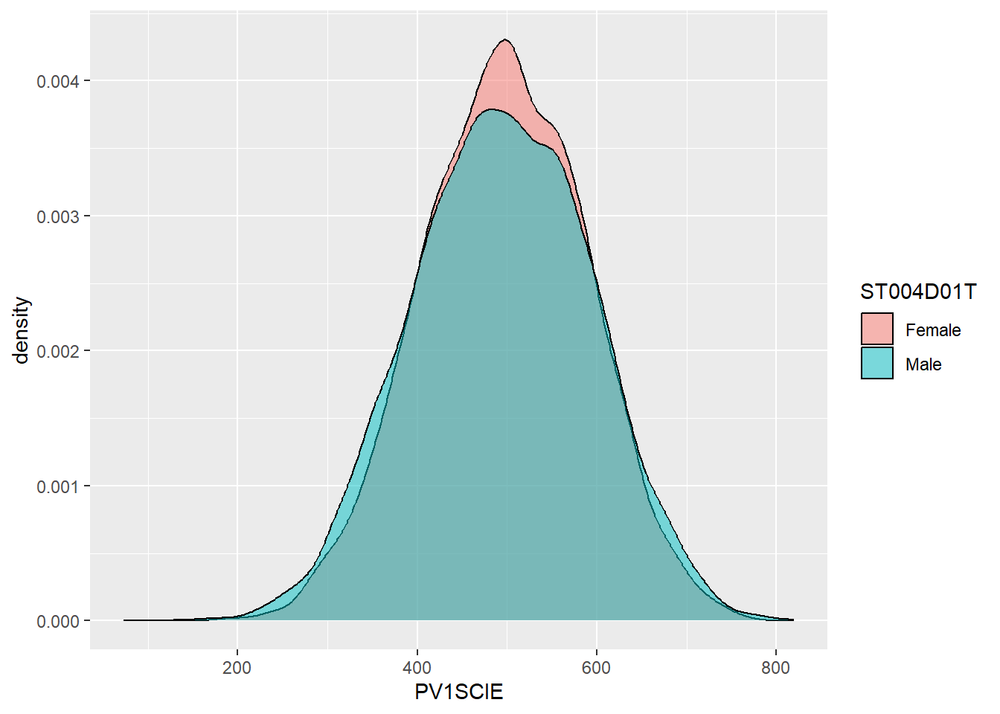
Show the answer
# Create a data frame of UK and Japanese mathematics scores
JPUKMath<-PISA_2018 %>%
select(CNT, PV1MATH) %>%
filter(CNT == "United Kingdom"|CNT == "Japan")
# Plote the density chart, changing colour by country, and setting the alpha (opacity) to 0.5
ggplot(data = JPUKMath,
aes(x = PV1MATH, fill = CNT)) +
geom_density(alpha = 0.5)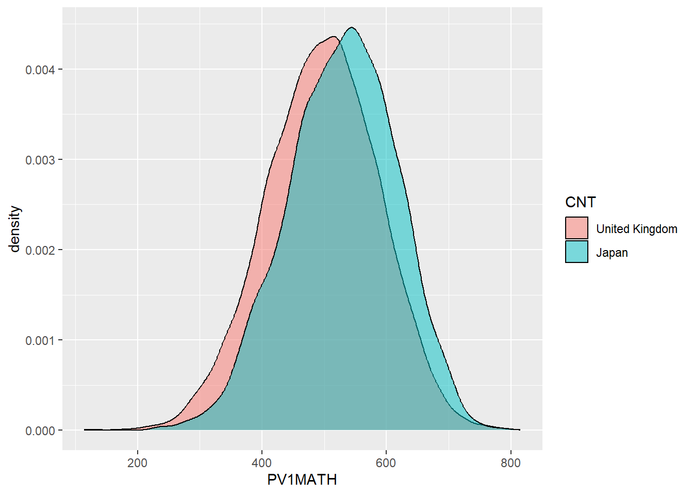
1.4.5 Task 4 Plot distributions of scores by gender
- Examine gender differences: Plot the distributions of mathematics achievement in the UK by gender. What patterns can you see?
1.4.6 Task 5 Facet wrap by country
Plot density graphs of gender differences in mathematics scores in the UK, US, Japan, Korea and Finland. Hint use facet_wrap(.~CNT)
Show the answer
# Create a data frame of mathematics scores, gender and country
# Filter by the four countries of interest
MathGender <- PISA_2018 %>%
select(CNT, PV1MATH, ST004D01T) %>%
filter(CNT == "United Kingdom"|CNT == "United States"|CNT == "Japan"
| CNT=="Korea"|CNT == "Finland")
# Plot a density graph of mathematics scores, splitting into groups, with coloured fills by gender. Set transparency to 0.5 to show overlap
ggplot(data = MathGender,
aes(x = PV1MATH, fill = ST004D01T)) +
geom_density(alpha = 0.5) +
facet_wrap(.~CNT)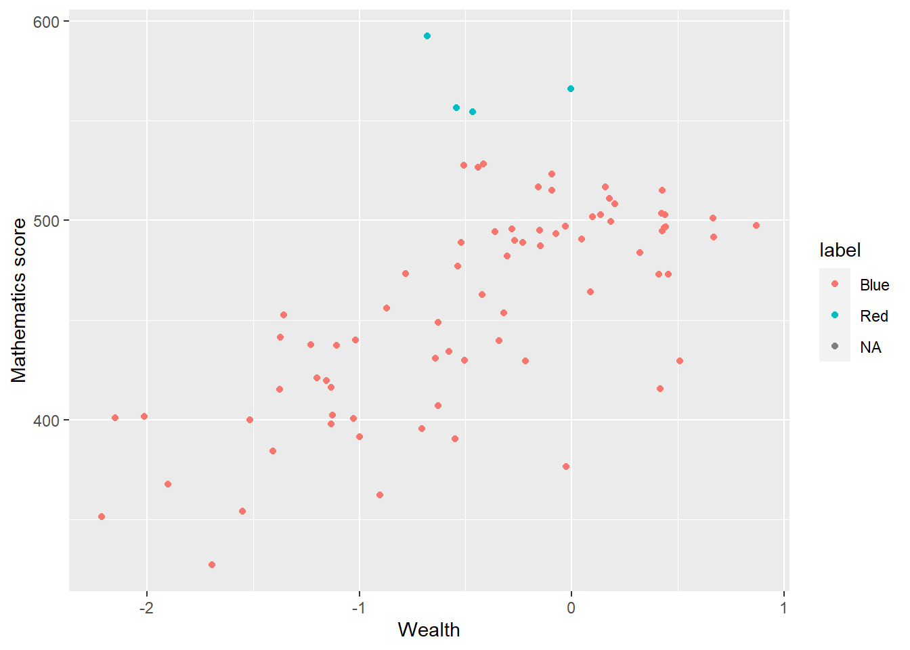
1.4.7 Task 6 Plot a scatter graph
Plot a scatter graph of mean mathematics achievement (y-axis) by mean wealth (x-axis) with each country as a single point. Hint: You will first need to use group_by and then summarise to create a data frame of mean scores.
Note that the competency tests for Vietnam in PISA are all NA at the student level. This is because many students finish compulsory schooling before 15. Hence, we add an na.omit to remove the data from Vietnam
Show the answer
# Create a summary data frame
# Group by country, and then summarise the mean meath and wealth scores
Wealthdata <- PISA_2018 %>%
select(CNT, WEALTH, PV1MATH) %>%
filter(CNT!="Vietnam")%>% # To cut Vietnam due to lack of data
group_by(CNT) %>%
summarise(MeanWealth=mean(WEALTH, na.rm = TRUE),
MeanMath=mean(PV1MATH, na.rm = TRUE))
# Use ggplot to create a scatter graph
ggplot(data = Wealthdata,
aes(x = MeanWealth, y = MeanMath)) +
geom_point(alpha = 0.5) +
xlab("Wealth") +
ylab("Mathematics score")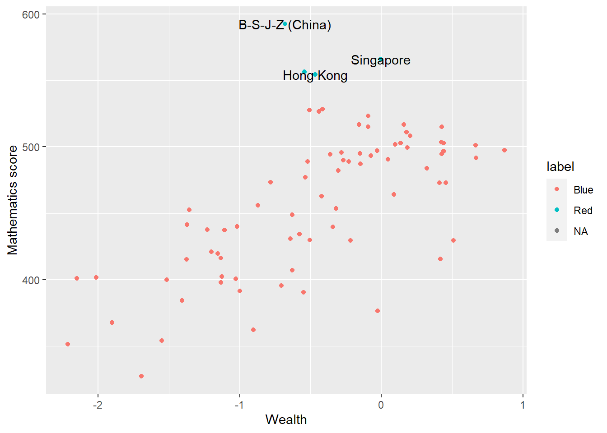
In the previous scatter of mathematics vs wealth scores, highlight outlier countries (any score of over 550) in a different colour. Hint, mutate the data frame to include a label column (by the condition of the maths score being over 550). Then set the colour in ggplot by theis label column.
Show the answer
Wealthdata <- PISA_2018 %>%
select(CNT, WEALTH, PV1MATH) %>%
group_by(CNT) %>%
filter(CNT!="Vietnam")%>%
summarise(MeanWealth = mean(WEALTH, na.rm = TRUE),
MeanMath = mean(PV1MATH, na.rm = TRUE)) %>%
mutate(label=ifelse(MeanMath > 550, "Red", "Blue"))
ggplot(data = Wealthdata,
aes(x = MeanWealth, y = MeanMath, colour = label)) +
geom_point() +
xlab("Wealth") +
ylab("Mathematics score")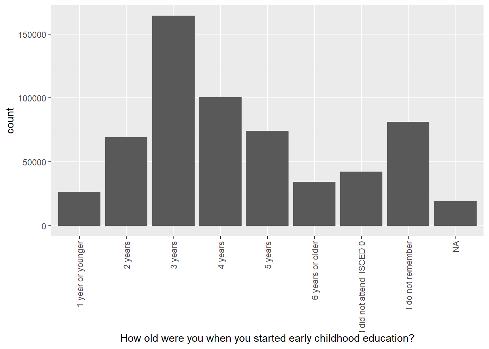
Add the country names as a label to the outliers. Hint: add an additional column labelname to which the country name as.charachter(CNT) is added if the MeanMath score is over 550. Hint: you can use geom_label_repel to add the labels. You can set: (aes(label = labelname), colour = "black", check_overlap = TRUE) to give the source of the lables (labelname) the colour and to force the lables not to overlap.
Show the answer
# Mutate to give a new column labelname, set to the country name (CNT) if Meanmath is over 500, or NA if not.
Wealthdata <- PISA_2018 %>%
select(CNT, WEALTH, PV1MATH) %>%
group_by(CNT) %>%
filter(CNT!="Vietnam")%>%
summarise(MeanWealth = mean(WEALTH, na.rm = TRUE),
MeanMath = mean(PV1MATH, na.rm = TRUE)) %>%
mutate(label = ifelse(MeanMath>550, "Red", "Blue")) %>%
mutate(labelname = ifelse(MeanMath>550, as.character(CNT), NA))
# Use geom_label_repel to add the labelname column to the graph
ggplot(data = Wealthdata,
aes(x = MeanWealth, y = MeanMath, colour = label)) +
geom_point() +
geom_label_repel(aes(label = labelname),
colour = "black",
check_overlap = TRUE) +
xlab("Wealth") +
ylab("Mathematics score") 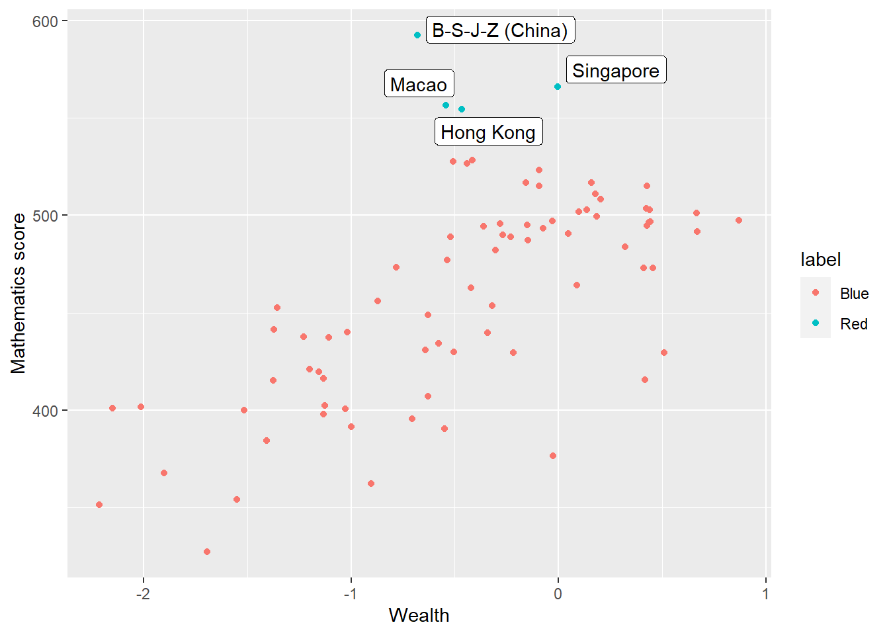
1.4.8 Task 7 Plot Likert responses using facet wrapping
Examine Likert responses by country using facet plot.
For ST125Q01NA - How old were you when you started early childhood education? Plot responses, first, for the whole data set, then facet plot for the UK, Germany, Belgium, Austria, France, Poland, Estonia, Finland and Italy.
• What international differences can you note?
Show the answer
# Create a data frame of childhood education data for the whole data frame
ChildhoodEd<-PISA_2018 %>%
select(CNT, ST125Q01NA) %>%
group_by(CNT)
# Plot a bar graph of responses
ggplot(data = ChildhoodEd,
aes(x = ST125Q01NA)) +
geom_bar() +
xlab("How old were you when you started early childhood education?") +
theme(axis.text.x = element_text(angle = 90, vjust = 0.5, hjust = 1))
Then use faceting to split the plots by country
Show the answer
# Repeat filtering for UK, Germany, Belgium, Austria, France, Poland, Estonia, Finland and Italy
Culturedata <- PISA_2018 %>%
select(CNT, ST125Q01NA) %>%
filter(CNT == "United Kingdom"|CNT == "Germany" | CNT == "Belgium"
| CNT == "Austria"| CNT == "France" | CNT == "Poland"
| CNT == "Estonia" | CNT=="Finland"| CNT=="Italy")
# Plot the data and facet wrap
ggplot(data = Culturedata,
aes(x = ST125Q01NA, fill = CNT))+
geom_bar()+
xlab("How old were you when you started early childhood education?") +
theme(axis.text.x = element_text(angle = 90, vjust = 0.5, hjust = 1)) +
facet_wrap(. ~ CNT)
1.4.9 Task 8 Categorise WEALTH scores
Categorising Variables
Split the WEALTH variable for the UK and Germany into the following groups:
| WEALTH | Name of category |
|---|---|
| >1 | Very High |
| 0>WEALTH<1 | High |
| 0< | Low |
Plot bar graphs of participants in these categories for both countries.
• What differences can you observe bettwen the countries?
Hint: You can use mutate with if_else to do the categorisation: e.g. mutate(MATHSCORECAT = ifelse(PV1MATH > 400, ifelse(PV1MATH > 500, "Very high", "High"), "Low"))
Show the answer
# Create a data frame for the UK and Germany
# Mutate the WTHCTG (wealth caregory) column by the boundaries of wealth categories
Wealth <- PISA_2018 %>%
select(CNT, WEALTH) %>%
filter(CNT == "United Kingdom" | CNT == "Germany") %>%
mutate(WTHCTG = ifelse(WEALTH > 0,
ifelse(WEALTH > 1,
"Very high",
"High"),
"Low"))%>%
group_by(CNT) %>%
droplevels()
ggplot(data = Wealth,
aes(x = WTHCTG, fill = WTHCTG))+
geom_bar()+
facet_wrap(.~CNT)+
xlab("Wealth grouping")
:::
1.4.10 Task 9 Compare the association between mathematics and science PV values across three diverse countries
Plot scatter plots of science versus mathematics achievement in United Kingdom, Qatar and Brazil • What differences can you see between the countries?
Show the answer
# Create a dataframe of sience and mathematics scores, across the countires Including gender)
SciMaths <- PISA_2018 %>%
select(CNT, PV1MATH, PV1SCIE, ST004D01T) %>%
filter(CNT == "Colombia" | CNT == "New Zealand" | CNT == "Qatar"| CNT=="Israel") %>%
droplevels()
# Scatter plot the data, faceting by country
ggplot(data = SciMaths,
aes(x = PV1MATH, y = PV1SCIE, colour=ST004D01T))+
geom_point(size=0.1, alpha=0.5)+
facet_wrap(.~CNT)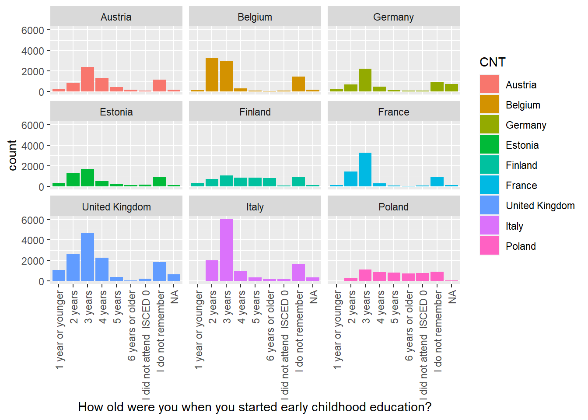
Show the answer
# Low achieving
SciMaths <- PISA_2018 %>%
select(CNT, PV1MATH, PV1SCIE, ST004D01T) %>%
filter(CNT == "Colombia" | CNT == "New Zealand" | CNT == "Qatar"| CNT=="Israel") %>%
filter(PV1MATH<400)%>%
filter(PV1SCIE<400)%>%
droplevels()
ggplot(data = SciMaths,
aes(x = PV1MATH, y = PV1SCIE, colour=ST004D01T))+
geom_point(size=0.1, alpha=0.5)+
facet_wrap(.~CNT)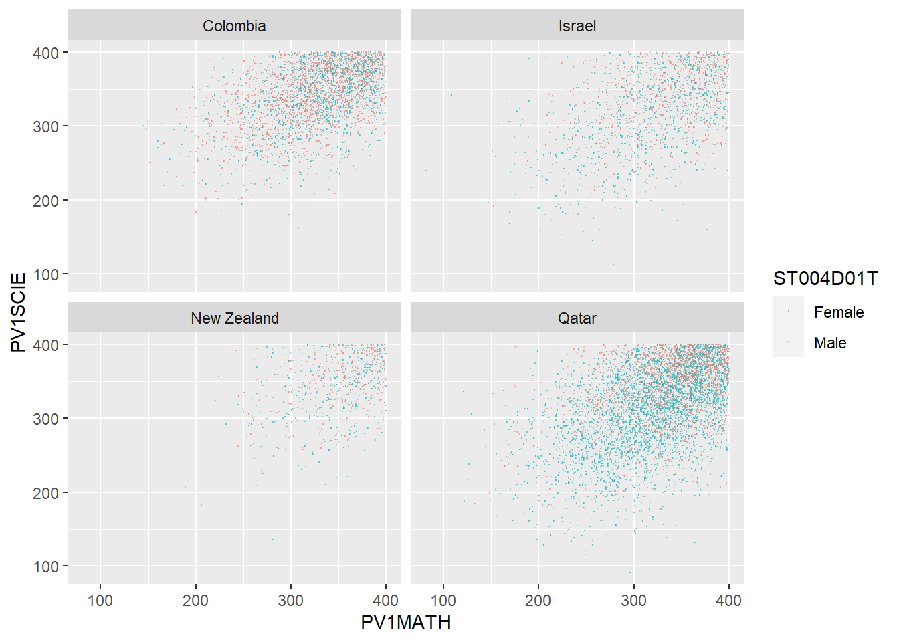